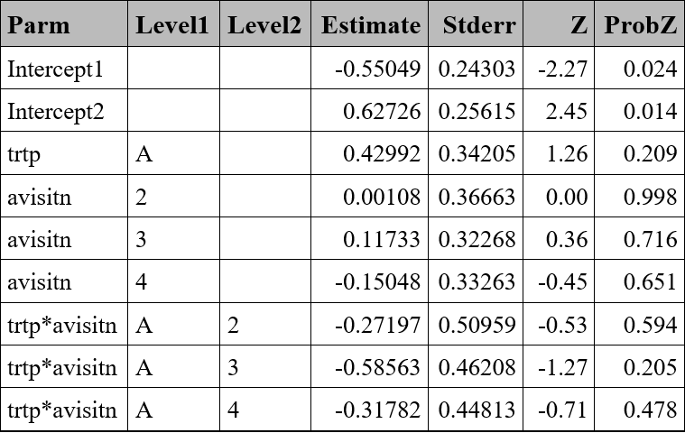
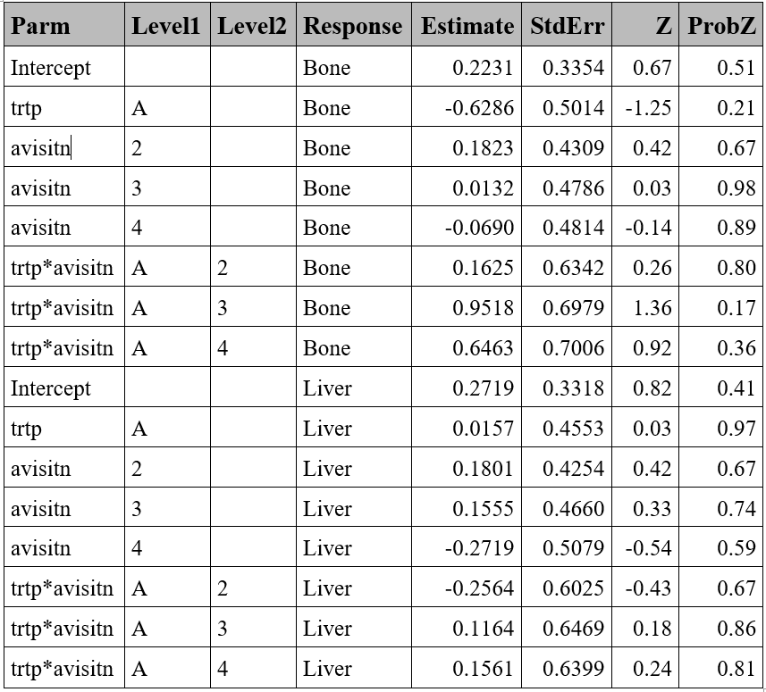

proc genmod data=resp ;
class trtp(ref="P") avisitn(ref='1') usubjid ;
model respord=trtp avisitn trtp*avisitn / dist=multinomial link=cumlogit ;
repeated subject=usubjid /corr=ind;
lsmeans trtp*avisitn/cl exp ilink oddsratio diff;
ods output GEEEmpPEst=GEEEmpPEst_ord ;
run;Generalized Estimating Equations (GEE) methods
Comparison of SAS vs R
BINARY OUTCOME
For dichotomous response variables, the link functions is the probit (in case of rare events complementary log-log may be preferable). For outcomes with more than two categories, the cumulative link function is used in case of ordinal variables and generalized logit for nominal variables.
In SAS, PROC GEE or PROC GENMOD can be used to compute GEE models. In R, GEE models can be fitted using geepack::geeglm or gee::gee.
Estimated probabilities and odds ratios (OR) can be obtained in SAS by adding an LSMEANS statement, and in R by using an additional function with results from geepack::geeglm. For models fitted with gee::gee, the emmeans package is not supported.
The table below summarizes options and details for each procedure/function:
| Procedure/Function | geepack::geeglm | gee:gee | PROC GEE/GENMOD |
|---|---|---|---|
| Outcome variable | Numeric (0, 1) | Factor | Numeric or character in class statement |
| Correlation matrix (default) | Independence | Independence | Independence |
| Correlation matrix (options) | independence, exchangeable, ar1, unstructured and user defined. | independence, fixed, stat_M_dep, non_stat_M_dep, exchangeable, AR-M and unstructured. | independence, ar, exchangeable, mdep, unstructured and user defined. |
| Outcome variable | Numeric (0, 1) | Factor | Numeric or factor, in class statement |
| Sandwich SE | By default | By default | By default |
| Model-based (naive) SE | No | By default | modelse option in repeated statement |
| Link functions | probit, logit | probit, logit | probit, logit, clogit and glogit |
| Estimated probability of event | additional function emmeans::emmeans |
emmeans::emmeans not supported |
LSMEANS statement with ilink option |
| Odds Ratio (OR) | additional function emmeans::emmeans |
emmeans::emmeans not supported |
LSMEANS statement with exp or oddsraiooption |
A comparison between SAS (using PROC GEE) and the R functions using data available in “Gee Model for Binary Data”, and similar results were found across software using similar options (See R and SAS sections).
Note small differences may be found in later decimal places (>9 decimal position) in results obtained with PROC GENMOD and PROC GEE. Similarly, differences in later decimals may be found across R functions.
OUTCOME WITH MORE THAN TWO CATEGORIES
Models with cumulative logit link functions apply to ordinal data and generalized logit models are fit to nominal data.
In SAS, similar syntax used for GEE models can be applied by specifying a multinomial distribution and selecting the appropriate link function. In R, the multgeepackage provides two functions for estimating GEE models when the outcome has more than two categories: ordLORgee for ordinal variables and nomLORgee for nominal variables.
| Procedure/Function | multgee:ordLORgee | multgee:nomLORgee | PROC GEE/PROC GENMOD | PROC GEE/GENMOD |
|---|---|---|---|---|
| Correlation matrix (default) | Exchangeable | Independence | Independence | |
| Correlation matrix (options) | independence, uniform, exchangeable, time.exch, fixed | independence, exchangeable, RC or fixed | Independence(1) | |
| Link function | clogit (implicit - not user configurable) | glogit (implicit - not user configurable) | glogit, glogit(2) | |
| Model-based (naive) SE | No | By default | modelse option in repeated statement |
For multinomial responses, SAS limits the correlation matrix type to
independent,so other correlation matrix options are not supported.Generalized logit is available in PROC GEE, but not in PROC GENMOD.
The same data analyzed in the corresponding section for SAS and R are analyzed to compare results using equivalent settings, i.e.: specifying ‘independence’ correlation matrix in R to match SAS.
SAS results were stored in a dataset and reformatted to align with R output in terms of order and decimal precision, making visual comparison easier.
Ordinal variable - Example

model <- multgee::ordLORgee(formula = respord ~ trtp + avisitn + trtp*avisitn,
data = resp,
id = usubjid,
repeated = avisitn,
LORstr = "independence")
summary(model)GEE FOR ORDINAL MULTINOMIAL RESPONSES
version 1.6.0 modified 2017-07-10
Link : Cumulative logit
Local Odds Ratios:
Structure: independence
call:
multgee::ordLORgee(formula = respord ~ trtp + avisitn + trtp *
avisitn, data = resp, id = usubjid, repeated = avisitn, LORstr = "independence")
Summary of residuals:
Min. 1st Qu. Median Mean 3rd Qu. Max.
-0.4698929 -0.3568933 -0.2853896 0.0002563 0.6339985 0.7277428
Number of Iterations: 1
Coefficients:
Estimate san.se san.z Pr(>|san.z|)
beta10 -0.55049 0.24303 -2.2652 0.02350 *
beta20 0.62726 0.25615 2.4488 0.01433 *
trtpA 0.42992 0.34205 1.2569 0.20880
avisitn2 0.00108 0.36663 0.0030 0.99765
avisitn3 0.11733 0.32268 0.3636 0.71616
avisitn4 -0.15048 0.33263 -0.4524 0.65099
trtpA:avisitn2 -0.27197 0.50959 -0.5337 0.59355
trtpA:avisitn3 -0.58563 0.46208 -1.2674 0.20503
trtpA:avisitn4 -0.31782 0.44813 -0.7092 0.47819
---
Signif. codes: 0 '***' 0.001 '**' 0.01 '*' 0.05 '.' 0.1 ' ' 1
Local Odds Ratios Estimates:
[,1] [,2] [,3] [,4] [,5] [,6] [,7] [,8]
[1,] 0 0 1 1 1 1 1 1
[2,] 0 0 1 1 1 1 1 1
[3,] 1 1 0 0 1 1 1 1
[4,] 1 1 0 0 1 1 1 1
[5,] 1 1 1 1 0 0 1 1
[6,] 1 1 1 1 0 0 1 1
[7,] 1 1 1 1 1 1 0 0
[8,] 1 1 1 1 1 1 0 0
p-value of Null model: 0.68672 Nominal variable - Example
proc gee data=resp ;
class trtp(ref="P") avisitn(ref='1') usubjid respnom(ref='Lung');
model respnom=trtp avisitn trtp*avisitn/ dist=multinomial link=glogit ;
repeated subject=usubjid /corr=ind /*modelse*/;
lsmeans trtp*avisitn/cl exp ilink oddsratio diff;
ods output GEEEmpPEst=GEEEmpPEst_nom ;
run;
model <- multgee::nomLORgee(formula = respnom ~ trtp + avisitn + trtp*avisitn,
data = resp,
id = usubjid,
repeated = avisitn,
LORstr = "independence")
summary(model)GEE FOR NOMINAL MULTINOMIAL RESPONSES
version 1.6.0 modified 2017-07-10
Link : Baseline Category Logit
Local Odds Ratios:
Structure: independence
Homogenous scores: TRUE
call:
multgee::nomLORgee(formula = respnom ~ trtp + avisitn + trtp *
avisitn, data = resp, id = usubjid, repeated = avisitn, LORstr = "independence")
Summary of residuals:
Min. 1st Qu. Median Mean 3rd Qu. Max.
-0.4444 -0.3684 -0.3333 0.0000 0.6111 0.7778
Number of Iterations: 1
Coefficients:
Estimate san.se san.z Pr(>|san.z|)
beta10 0.22314 0.33541 0.6653 0.5059
trtpA:1 -0.62861 0.50139 -1.2537 0.2099
avisitn2:1 0.18232 0.43095 0.4231 0.6722
avisitn3:1 0.01325 0.47862 0.0277 0.9779
avisitn4:1 -0.06899 0.48140 -0.1433 0.8860
trtpA:avisitn2:1 0.16252 0.63421 0.2563 0.7977
trtpA:avisitn3:1 0.95184 0.69786 1.3639 0.1726
trtpA:avisitn4:1 0.64631 0.70063 0.9225 0.3563
beta20 0.27193 0.33184 0.8195 0.4125
trtpA:2 0.01575 0.45535 0.0346 0.9724
avisitn2:2 0.18005 0.42536 0.4233 0.6721
avisitn3:2 0.15551 0.46598 0.3337 0.7386
avisitn4:2 -0.27193 0.50787 -0.5354 0.5924
trtpA:avisitn2:2 -0.25642 0.60253 -0.4256 0.6704
trtpA:avisitn3:2 0.11642 0.64694 0.1800 0.8572
trtpA:avisitn4:2 0.15610 0.63994 0.2439 0.8073
Local Odds Ratios Estimates:
[,1] [,2] [,3] [,4] [,5] [,6] [,7] [,8]
[1,] 0 0 1 1 1 1 1 1
[2,] 0 0 1 1 1 1 1 1
[3,] 1 1 0 0 1 1 1 1
[4,] 1 1 0 0 1 1 1 1
[5,] 1 1 1 1 0 0 1 1
[6,] 1 1 1 1 0 0 1 1
[7,] 1 1 1 1 1 1 0 0
[8,] 1 1 1 1 1 1 0 0
p-value of Null model: 0.28295 REFERENCES
[1] SAS Institute Inc.. SAS Help Center. The GEE procedure.
[2] SAS/STAT® 13.1 User’s Guide The GEE Procedure.
[3] SAS/STAT® 13.1 User’s Guide The GENMOD Procedure.
[4] Generalized Estimating Equation Package